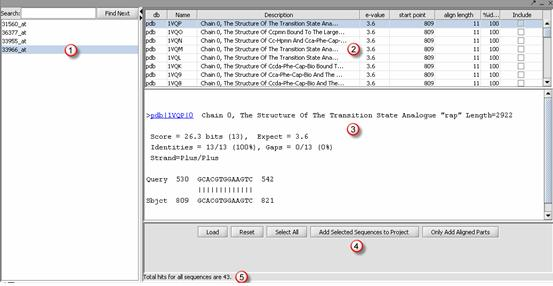

The Alignment Result component is located in the View Area in the upper right of the application. This visualization component displays blast results from the Analysis Area Sequence Alignment component. The results of a blast search is displayed both as Paracel BLAST in a separate window and BLAST alignments in the Alignment Result component. They include the BLAST hit data with hyperlinks to NCBI data pages that describe the sequence . From this component a user can display the alignments in the panel and create a fasta file with sequences selected.
The steps of basic usage are indicated in the below screenshot.

1 Ancillary data node created for Blast results.
2 Click on the sequence to display the alignments in the below display panel. This includes hyperlinks to NCBI public databases pages describe the selected sequence.
3 Select Add Selected Sequences to Project to create a dataset of the selected sequences.
4 Loads stored html alignment file.
5 Clears the selected sequences.
6 Selects all sequences.
7 Select sequences and the click on Only Added Alignment Parts. This creates a FASTA file that contains portions of the sequence that align with the input data.
Note: Access the Sequence Panel component to view the sequence shown as lines.
1 Click on the Include checkboxes to selected sequences of those hits. Click on Select All to select all of hits.
2 Click on Add Selected to a Project. The program will generate a temporary FASTA file for those sequences; a new file node will be added under current project.
3 (If desired) Right click on the file node to save or rename.